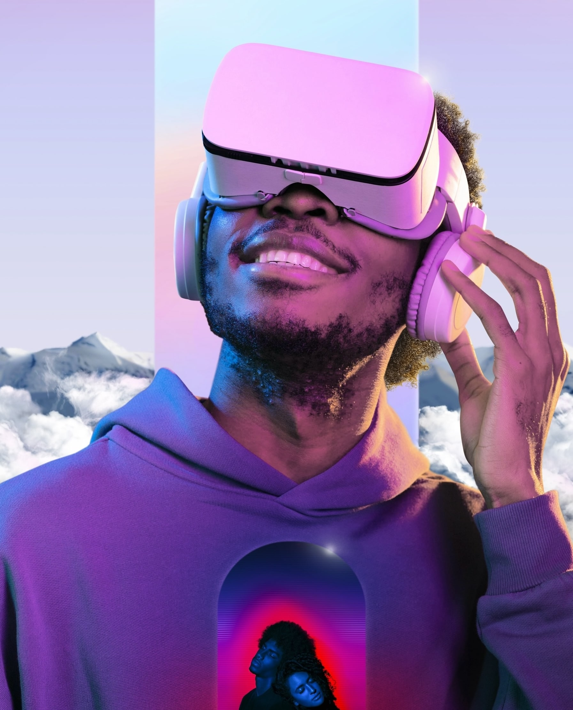
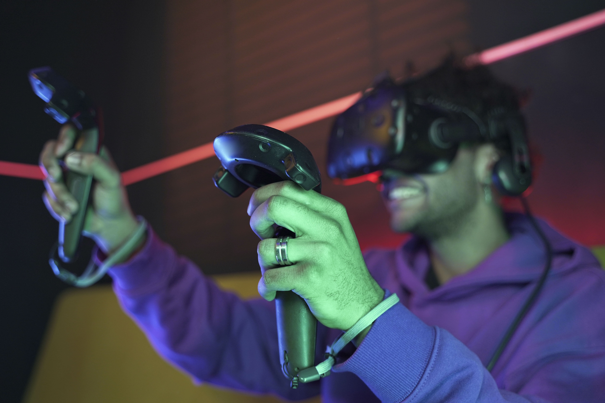
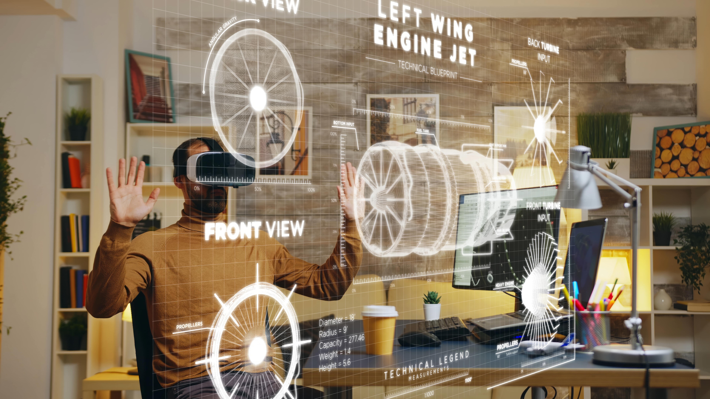
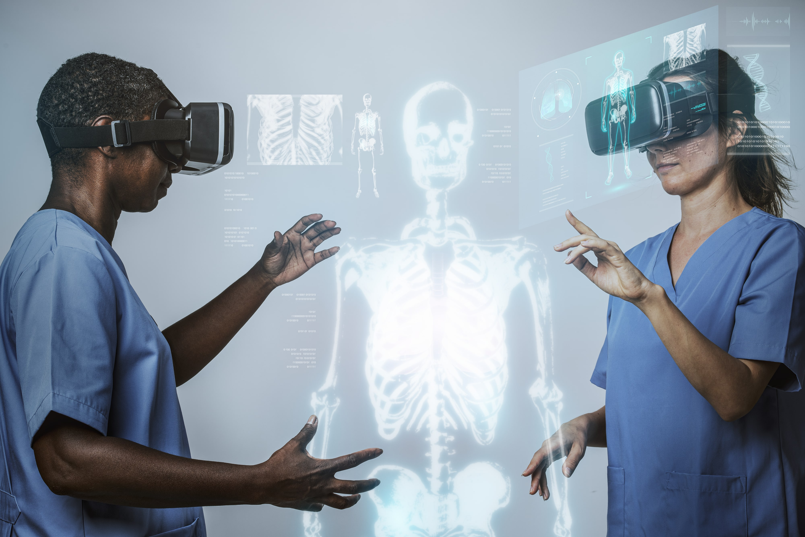

Understanding Virtual Reality
Virtual reality is a simulated 3D environment that enables users to explore and interact with a virtual surrounding in a way that approximates reality, as it is perceived through the users' senses. The environment is created with computer hardware and software, although users might also need to wear devices such as helmets or goggles to interact with the environment. The more deeply users can immerse themselves in a VR environment -- and block out their physical surroundings -- the more they are able to suspend their belief and accept it as real, even if it is fantastical in nature.
VR systems can vary significantly from one to another, depending on their purpose and the technology used, although they generally fall into one of the following three categories:
Non-immersive: This type of VR typically refers to a 3D simulated environment that's accessed through a computer screen. The environment might also generate sound, depending on the program. The user has some control over the virtual environment using a keyboard, mouse or other device, but the environment does not directly interact with the user. A video game is a good example of non-immersive VR, as is a website that enables a user to design a room's decor.
Semi-immersive: This type of VR offers a partial virtual experience that's accessed through a computer screen or some type of glasses or headset. It focuses primarily on the visual 3D aspect of virtual reality and does not incorporate physical movement in the way that full immersion does. A common example of semi-immersive VR is the flight simulator, which is used by airlines and militaries to train their pilots.
Fully immersive: This type of VR delivers the greatest level of virtual reality, completely immersing the user in the simulated 3D world. It incorporates sight, sound and, in some cases, touch. There have even been some experiments with the addition of smell. Users wear special equipment such as helmets, goggles or gloves and are able to fully interact with the environment. The environment might also incorporate such equipment as treadmills or stationary bicycles to provide users with the experience of moving through the 3D space. Fully immersive VR technology is a field still in its infancy, but it has made important inroads into the gaming industry and to some extent the healthcare industry, and it's generating a great deal of interest in others.

VR systems can vary significantly from one to another, depending on their purpose and the technology used, although they generally fall into one of the following three categories:
Non-immersive: This type of VR typically refers to a 3D simulated environment that's accessed through a computer screen. The environment might also generate sound, depending on the program. The user has some control over the virtual environment using a keyboard, mouse or other device, but the environment does not directly interact with the user. A video game is a good example of non-immersive VR, as is a website that enables a user to design a room's decor.
Semi-immersive: This type of VR offers a partial virtual experience that's accessed through a computer screen or some type of glasses or headset. It focuses primarily on the visual 3D aspect of virtual reality and does not incorporate physical movement in the way that full immersion does. A common example of semi-immersive VR is the flight simulator, which is used by airlines and militaries to train their pilots.
Fully immersive: This type of VR delivers the greatest level of virtual reality, completely immersing the user in the simulated 3D world. It incorporates sight, sound and, in some cases, touch. There have even been some experiments with the addition of smell. Users wear special equipment such as helmets, goggles or gloves and are able to fully interact with the environment. The environment might also incorporate such equipment as treadmills or stationary bicycles to provide users with the experience of moving through the 3D space. Fully immersive VR technology is a field still in its infancy, but it has made important inroads into the gaming industry and to some extent the healthcare industry, and it's generating a great deal of interest in others.
Application Accross Industries

Gaming:
One of the most well-known applications of VR is in the gaming industry. VR gaming provides an unparalleled level of immersion, allowing players to step into the shoes of their in-game characters. The experience goes beyond conventional gaming, creating a sense of presence and engagement that traditional gaming cannot match.

Education:
In the field of education, VR has become a powerful tool for immersive learning experiences. From virtual field trips that transport students to historical landmarks to complex medical simulations, VR enhances understanding by providing a hands-on, interactive approach to education.
